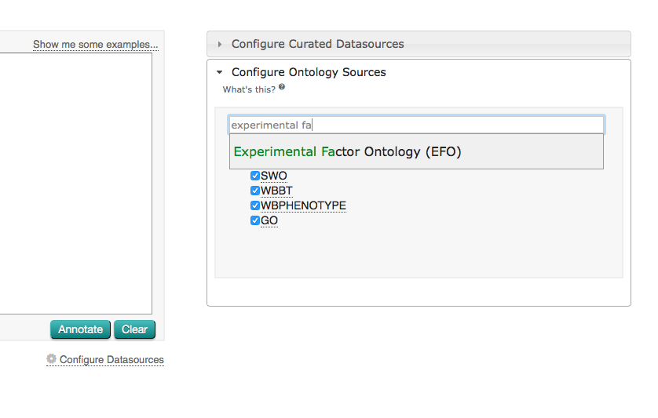
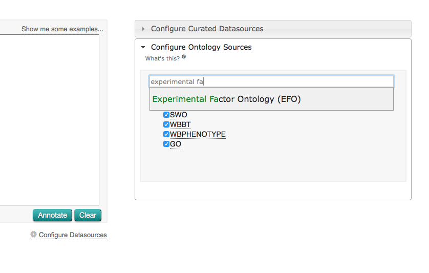

Getting Started
Basics
The ZOOMA homepage contains a text box that allows you to discover possible ontology mappings for your terms. Try clicking the "Show me some examples..." link above this box - it should populate the box with example terms. Hit 'Annotate'. A progress bar appears, showing you when ZOOMA has mapped your terms.

Once complete, you should see a table of results. Green shows that ZOOMA could map this term
"automatically", i.e. with a HIGH degree of confidence. Yellow shows that ZOOMA was less sure with a GOOD, MEDIUM or LOW degree of confidence, and
results might need further curator intervention to determine if ZOOMA is correct.
We can help Zooma return a mapping with higher confidence if we supply additional context for a term by adding a type to
our search. If you look at the text box, you'll see when you clicked "Show me some examples..." it
populated a type after some values, with a tab between them, e.g.: cooked broccoli compound.

Let's look at some of the examples in a little more detail, and try to make it harder for Zooma to find a result.
First let us limit it's sources by annotating the terms to the Expression Atlas datasource.
Zooma gives you the option
to limit the sources that it will use to find annotation predictions. These sources are either curated datasources,
or ontologies from the Ontology Lookup Service.
From the 'Configure Datasources' gear, select 'Configure Curated Datasources' and select only Expression Atlas as the source to be searched in.
Next limit the terms to the four ones shown below, and remove the type 'phenotype' from spastic paraplegia 10.
Now hit 'Annotate'.
Again we can see that some terms where mapped with high confidence, and others with good. If we look at the terms that weren't mapped,
in the case of spastic paraplegia 10, we can see that Zooma will not find a mapping in the Expression Atlas datasource.

Lets try to help Zooma out again, by adding some context. If we add a type to spastic paraplegia 10, we can improve our confidence. Modify the input box - after the term Spastic paraplegia 10, put a tab and add 'phenotype'. Now hit 'Annotate' again. You should see that the third result in our table has gone yellow with a good confidence.

If you open the 'Configure Datasources' gear, and de-select the Expression Atlas datasource, Zooma will look into all the available curated datasources. If you Annotate the terms once again, you will see that Zooma has found a mapping with high confidence in the EVA ClinVar database for spastic paraplegia.

Worked Examples
Below are some example inputs you can run against ZOOMA. These datasets are all taken from ArrayExpress. You can open any of these files and copy and paste everything into the ZOOMA search box to see what coverage you get.
- ZOOMA example input 1
- ZOOMA example input 2
- ZOOMA example input 3
- ZOOMA example input 4
- ZOOMA example input 5
- ZOOMA example input 6
- ZOOMA example input 7
- ZOOMA example input 8
- ZOOMA example input 9
- ZOOMA example input 10
Copy and paste the data from one of the example input files, above, into the ZOOMA search box. Hit annotate and check you have some sensible looking results.
Zooma Results
We're going to export and inspect ZOOMA's output to see how well it did. Above your table of results, you should see an option to "Download my results". If you click this, you should be able to open a complete report from ZOOMA in a tab delimited text format in your browser.
Either right-click this link, then "Save as..." or else open the link and copy and paste the data. Open it in your spreadsheet editor of choice (Excel or Google Drive should work fine).
For example, you might get ZOOMA output like this:
| PROPERTY TYPE | PROPERTY VALUE | ONTOLOGY TERM LABEL(S) | MAPPING TYPE | ONTOLOGY TERM(S) | SOURCE(S) |
|---|---|---|---|---|---|
| Organism | Arabidopsis thaliana | Arabidopsis thaliana | High | NCBITaxon_3702 | http://www.ebi.ac.uk/gxa |
Does this look like a reasonable result?
Configuring Datasources
Zooma gives you the option to limit the sources that it will use to find annotation predictions. These sources are either curated datasources, i.e. manually curated annotations derived from public databases, or annotations found from ontologies in the Ontology Lookup Service.
By selecting the 'Configure Datasources' gear under the Zooma text box, you can either select from the available curated datasources, or look for an ontology in the Ontology Lookup Service.
 

Adding New Mappings to Zooma
From here on, we're going to review how to feed back data to Zooma to help improve mappings in
future. For example, if you found results in the worked example above that looked wrong, or if Zooma
gave multiple hits, or if there was something that did not map that you think should map, you can
add new mappings to Zooma to help improve it's output. Below, we're going to see how to do this.
Let say that you've copied/pasted example 9 in zooma and clicked on the 'annotate' button.
Looking at the term 'ripening' you can see that it is mapped to semantic tag PO_0007010 ("whole plant fruit ripening stage")
which is the ripening stage of the whole plant starting when the first fruit starts ripening and ending
when the last fruit finishes ripening.
Maybe you think that this association is wrong and you'd rather see 'ripening' being associated
with semantic tag PO_0025502 ("fruit ripening stage") which is the ripening of one fruit.
Then you can submit a tab file to our JIRA bug tracker which would be as follow :
| STUDY | BIOENTITY | PROPERTY_TYPE | PROPERTY_VALUE | SEMANTIC_TAG | ANNOTATOR | ANNOTATION_DATE |
|---|---|---|---|---|---|---|
| plant structure development stage | ripening | http://purl.obolibrary.org/obo/PO_0025502 | your_name | the_date |
The study, bioentity and type are not mandatory but help enriching the annotation for searches with
more context.
The date should be in the following format : 2015-08-21 12:00:00
We will then load that file to Zooma in one of our weekly data releases. Once that done, when
searching for 'ripening', Zooma would also suggest the PO_0025502 term you added.
Below is an example of an annotation submited by the Expression
Atlas group at the EBI :
| STUDY | BIOENTITY | PROPERTY_TYPE | PROPERTY_VALUE | SEMANTIC_TAG | ANNOTATOR | ANNOTATION_DATE |
|---|---|---|---|---|---|---|
| E-GEOD-10927 | GSE10927GSM277147 | biopsy site | left | http://www.ebi.ac.uk/efo/EFO_0001658 | Eleanor Williams | 01/10/2014 18:32 |
Now imagine that, to save curator time and energy, you've got this pipeline which uses the zooma rest api to
automatically annotate your data. Because you want to be on the safe side, the pipeline only accept annotations
which come back with a 'HIGH' mapping confidence.
Looking back at the 'example 9', you can see that the term 'GM08928' is mapped to semantic tag 'CLO_0011237'.
You know that this is true but in Zooma, because not many sources say so, it comes back with a 'GOOD' score
rather then a 'HIGH' score. So even though your automatic pipeline runs every week, you find yourself
having to annotate the same term over an over again.
To avoid that, you can also submit a spreadsheet, as described above, associating term 'GM08928' to semantic
tag 'CLO_0011237' and submit it to us. Because now zooma has the same association from 2 different datasources
then it is likely to come back next time with a 'HIGH' score and your annotation will be done automatically.